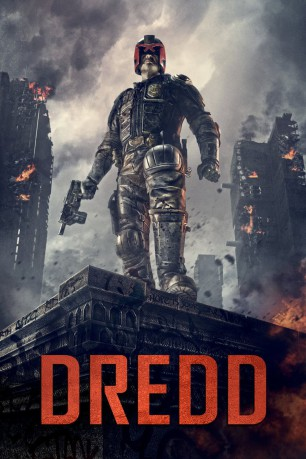

gesehen am 09.03.2015
gesehen am 09.03.2015 
 IMDB-Wertung: 7.1 / 10
IMDB-Wertung: 7.1 / 10  Metascore:
Metascore: 
Das zukünftige Amerika ist verstrahltes Brachland. An der Ostküste liegt Mega City One - eine riesige, gewalttätige Metropole wo Kriminelle die chaotischen Straßen beherrschen. Die einzige Kraft der Ordnung liegt bei den städtischen Polizisten genannt "Judges" die sich durch die kombinierten Kräfte der Richter, Jury und Henker auszeichnen. Bekannt und in der ganzen Stadt gefürchtet. Dredd ist der höchste Richter, mit der Aufgabe die Stadt von der neusten Plage zu befreien - einer gefährlichen Drogen Epidemie, die Nutzer von "Slo-Mo" erleben Wirklichkeit zu einem Bruchteil ihrer normalen Geschwindigkeit. Während eines routinemäßigen Tages bei der Arbeit wurde Dredd zugewiesen Cassandra Anderson zu trainieren, eine Anfängerin mit mächtigen psychischen Fähigkeiten dank einer genetischen Mutation. Ein abscheuliches Verbrechen ruft sie in eine Gegend, wo Judges sich nur selten hinwagen - einem Slum, kontrolliert von Prostituierten veränderten Drogen Lord Ma-Ma und ihr rücksichtsloser Clan.
Jahr: 2012
Dauer: 95 Minuten
FSK: 18
Land: England Studio: UFATonspuren: DTS - ,
Untertitel:
Auflösung: 1080p (1920×800) Größe: 6625 MB
Regisseur: Pete Travis
Drehbuch: John Wagner, Carlos Ezquerra, Alex Garland, Brian Bolland
Soundtrack: Paul Leonard-Morgan
Darsteller:
Datei: X:\FSK18-2012\Dredd (2012, FSK18, 1920x800) 3D.mkv seit 16.02.2015
Festplatte: FSK18
 Es gibt insgesamt 26 Filme in der Gruppe 'FSK18-2012'
Es gibt insgesamt 26 Filme in der Gruppe 'FSK18-2012'